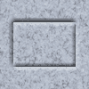

<map name="testmap1">
    <area href="#" shape="rect" coords="15,25,84,74" alt="Область в виде прямоугольника" />
</map>

<!-- 
coords - координаты области - x (верхний левый угол), у (верхний левый угол), x (нижний правый угол), у (нижний правый угол)
-->

